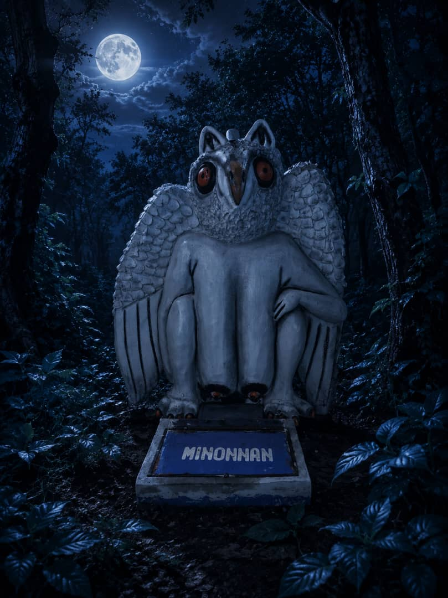
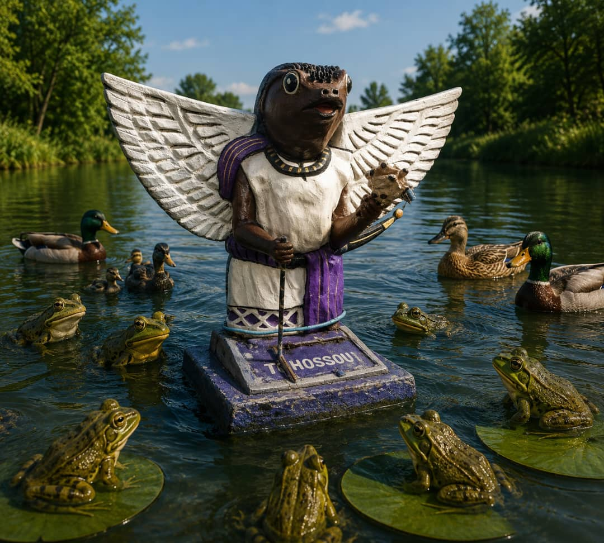
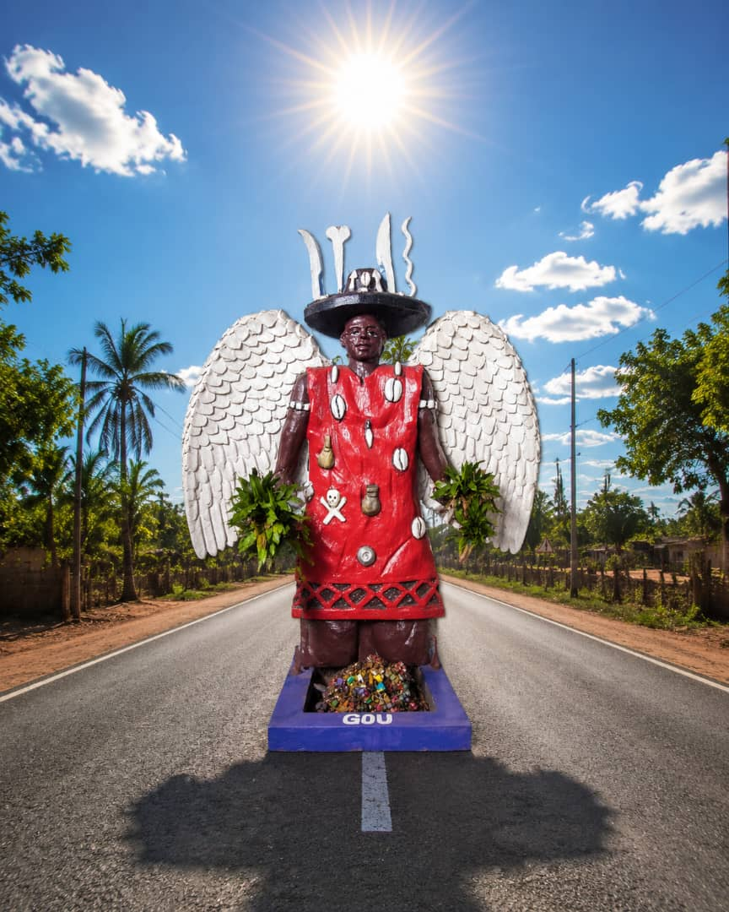
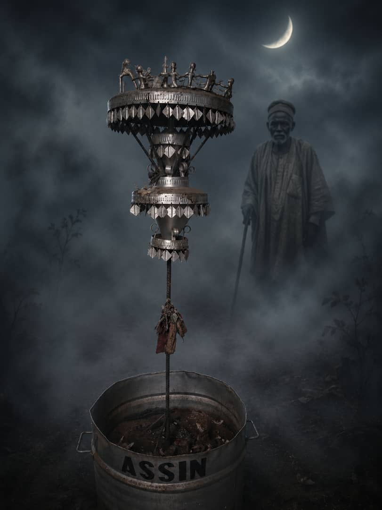
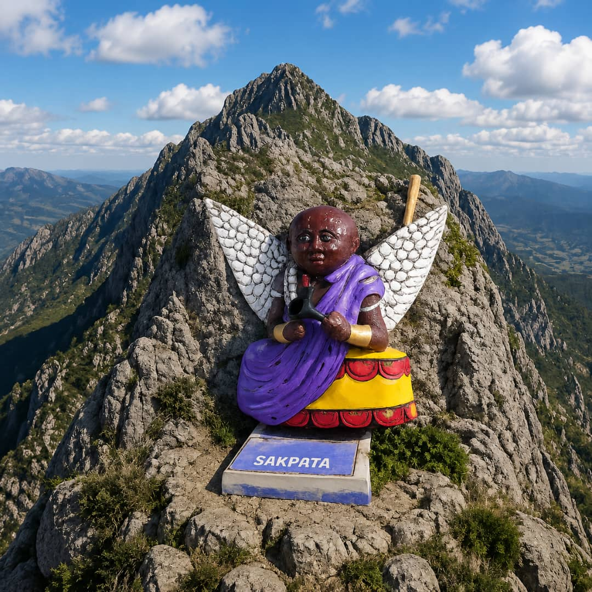

Les Divinités du Temple TGV
Chaque divinité présente au Temple possède une puissance, un domaine et des grâces spécifiques. Confier votre problème à la divinité appropriée garantit une réponse précise et des résultats concrets en quelques jours.
LÉGBA
Légba est le gardien des carrefours et des passages. Maître de la communication entre le monde des vivants et celui des esprits, il ouvre les portes fermées et facilite toutes les transitions importantes de la vie.
Il est indispensable d'invoquer Légba avant toute cérémonie spirituelle, car c'est lui qui permet la communication avec les autres divinités et qui débloque les situations les plus complexes.

SÈGBOLISSA
Sègbolissa est une manifestation puissante de la divinité suprême. Il représente la création, la sagesse et la puissance divine. Sa présence au Temple TGV est un atout majeur pour tous ceux qui recherchent la guidance spirituelle la plus élevée.
HOHOO
Hohoo est la divinité des jumeaux et des naissances sacrées, vénérée pour sa capacité à débloquer toutes les situations de la vie. Puissante et bienveillante, elle est le recours ultime pour quiconque se heurte à des obstacles persistants dans ses entreprises. Qu'il s'agisse de mariage, de voyage, de procréation, d'examens, de concours ou de tout autre projet important , les esprits jumeaux de Hohoo œuvrent de concert pour ouvrir les portes fermées, aplanir les chemins et rétablir l'harmonie là où régnait le blocage. Les fidèles qui se confient à Hohoo bénéficient d'une double force spirituelle, celle des jumeaux sacrés qui agissent comme des messagers entre le monde visible et invisible. Leur action conjuguée permet de dissoudre les résistances, de neutraliser les mauvais sorts et d'attirer les faveurs divines nécessaires à la réussite. Invoquer Hohoo, c'est s'assurer un allié puissant pour franchir les étapes cruciales de l'existence, avec la certitude que tout obstacle peut être levé.
Hooho (Hooo) est la divinité de la chasse, des forêts et de la nature sauvage. Gardien des secrets de la brousse et des plantes médicinales, il est le maître des guérisseurs et des herboristes traditionnels.
Il accorde ses grâces pour la réussite dans les entreprises, la protection lors des voyages en territoire inconnu et la révélation des secrets cachés. Sa connaissance des herbes sacrées est sans limite.

MINON NAN
Minon Nan est une divinité, Déesse Mère, protectrice des humains contre la sorcellerie. Elle veille sur la paix du ménage, l'harmonie et la descendance. Invoquez-la pour renforcer les liens familiaux et éloigner les disputes.

TOHOSSOU
Tohossou est la divinité des eaux profondes. Associé à la fécondité, à la naissance et à la prospérité, il est particulièrement invoqué par les couples qui désirent des enfants et par ceux qui cherchent l'abondance dans leur vie.

GOU
Gou est le maître du fer, des armes et des guerriers. Divinité des artisans, des forgerons et de tous ceux qui travaillent le métal, il confère force, courage et détermination à ceux qui invoquent sa puissance.

ASSIN
Assin est le lien sacré entre les vivants et les ancêtres. Représenté sous forme d'autel portable, il symbolise la continuité entre les générations et permet aux vivants de communiquer avec leurs défunts bien-aimés.
SÉGBO LISSA
Sègbo Lissa est l'une des divinités les plus pures et puissantes de la tradition vodoun. Associée à la lumière, la pureté et la prospérité, elle apporte clarté et sérénité à ceux qui se confient à elle.
HÉVIESSO
Hèviesso est le dieu du tonnerre et de la foudre. Divinité de la justice divine, il punit les injustes, protège les innocents et rétablit l'équilibre là où il a été rompu par la malveillance ou la tromperie.

DAN AYIDOHOUËDO
Dan Ayidohouèdo est le serpent arc-en-ciel, symbole de richesse, de mouvement et de continuité. Il représente l'énergie vitale qui traverse l'univers et apporte la chance, la fortune et la prospérité à ceux qui l'invoquent.

SAKPATA
Sakpata est le maître de la terre et des maladies. Divinité redoutée et respectée, il est à la fois celui qui envoie les maladies et celui qui les guérit. Il veille sur la santé des humains et sur la fertilité de la terre.
ANGE SACHIEL
L'Ange Sachiel est invoqué pour attirer l'abondance financière et la prospérité. Il est lié à Sègbolissa et sa puissance est amplifiée par cette connexion sacrée.
À prier les jeudis pour l'abondance financière. Faites un tour au Temple TGV entre 9h et 18h pour bénéficier pleinement de ses grâces.